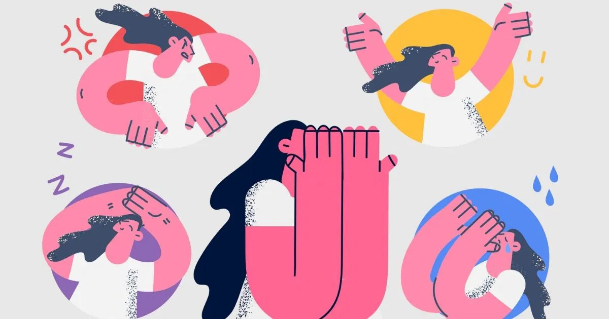
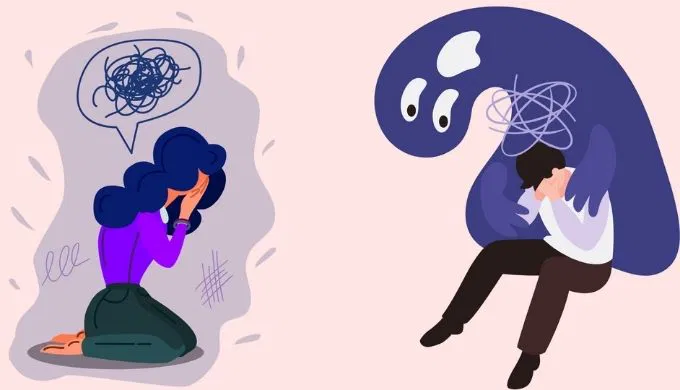
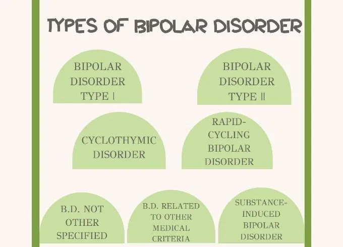
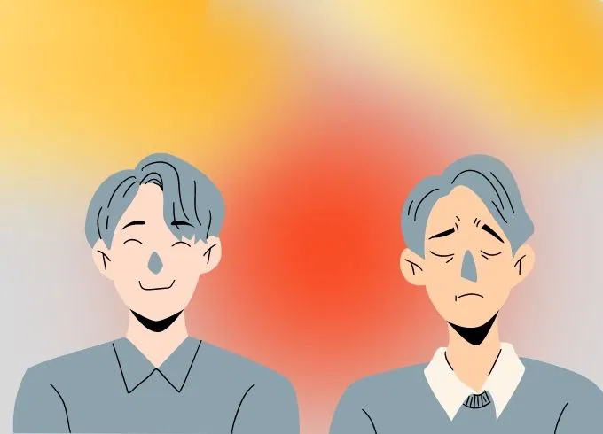
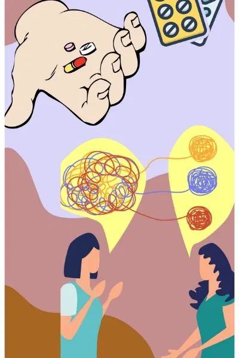

Bipolar Disorder, a mood disorder characterized by significant shifts in mood, energy, and behavior, affects millions of individuals worldwide. These mood fluctuations, which include manic or hypomanic episodes and depressive episodes, can profoundly impact various aspects of life, including relationships, employment, and overall functioning. Despite its prevalence, Bipolar Disorder is often misunderstood, leading to the perpetuation of myths and misconceptions that can hinder effective treatment and support. This article aims to clarify what Bipolar Disorder is and dispel five common myths surrounding the condition.

Bipolar Disorder is a complex mental health condition involving dramatic mood swings that can range from extreme highs (mania or hypomania) to deep lows (depression). These episodes can interfere with an individual's ability to carry out daily activities, maintain relationships, and perform at work. Understanding the nature of Bipolar Disorder is essential for effective management and support.

Bipolar I Disorder: This type is defined by the occurrence of at least one manic episode, which may be preceded or followed by hypomanic or depressive episodes. Manic episodes are characterized by elevated or irritable mood, increased energy, and impulsive behavior that lasts for at least one week or requires hospitalization.
Bipolar II Disorder: Individuals with Bipolar II Disorder experience at least one hypomanic episode and one major depressive episode. Hypomania is a less severe form of mania that does not cause significant impairment in daily functioning, unlike full-blown mania.
Cyclothymic Disorder (Cyclothymia): Cyclothymic Disorder involves periods of hypomanic symptoms and periods of depressive symptoms lasting for at least two years (one year in children and adolescents). However, these symptoms do not meet the criteria for a hypomanic episode or major depressive episode.
Bipolar Disorder Due to Another Medical Condition: This type of Bipolar Disorder is associated with a medical condition, such as a neurological disorder or a chronic illness, that influences mood.
Manic Episode Symptoms: Elevated or irritable mood, increased energy or activity levels, racing thoughts, rapid speech, inflated self-esteem, decreased need for sleep, distractibility, and engaging in risky behaviors like spending sprees or reckless driving.
Depressive Episode Symptoms: Persistent feelings of sadness, hopelessness, or emptiness, loss of interest in activities once enjoyed, significant changes in appetite or weight, trouble sleeping or oversleeping, fatigue, feelings of worthlessness or guilt, and thoughts of death or suicide.

A prevalent misconception is that Bipolar Disorder is merely about experiencing extreme mood swings. While mood fluctuations are a hallmark of the condition, Bipolar Disorder involves more than just occasional mood changes. The mood episodes in Bipolar Disorder are severe and can significantly impair an individual’s ability to function. The manic and depressive phases can be intense, with substantial impacts on personal, professional, and social aspects of life. Recognizing the depth of these mood episodes is crucial for understanding the full scope of the disorder.
Another common myth is that individuals with Bipolar Disorder are inherently unpredictable or dangerous. This stereotype perpetuates stigma and can discourage individuals from seeking help. While mood swings can affect behavior, they do not inherently make someone dangerous. Most people with Bipolar Disorder are not violent and are more likely to be victims of violence than perpetrators. Accurate understanding and compassion are essential in addressing these misconceptions and supporting those affected by the disorder.
It is a common misconception that Bipolar Disorder is synonymous with Borderline Personality Disorder (BPD). Although both conditions involve mood instability, they are distinct disorders. Bipolar Disorder is characterized by episodic mood changes between mania and depression, while BPD involves pervasive patterns of unstable moods, self-image, and interpersonal relationships. Proper diagnosis by a mental health professional is crucial for differentiating between these conditions and providing appropriate treatment.
The belief that Bipolar Disorder only affects young adults is a widespread misconception. While symptoms often begin in late adolescence or early adulthood, Bipolar Disorder can emerge at any age. There are cases of childhood-onset bipolar disorder, and individuals may experience the onset of symptoms later in life as well. Understanding that Bipolar Disorder can affect individuals across the lifespan is important for early detection and intervention.
A significant myth is that Bipolar Disorder prevents individuals from leading successful and fulfilling lives. This belief is not supported by evidence. With effective treatment, which may include medication, therapy, and lifestyle adjustments, many individuals with Bipolar Disorder manage their symptoms successfully and achieve personal and professional goals. Treatment can help stabilize mood, improve functioning, and enhance overall quality of life. Emphasizing the possibility of success and fulfillment is vital for fostering hope and encouraging individuals to seek and adhere to treatment.

Managing Bipolar Disorder effectively involves a combination of medical, therapeutic, and lifestyle approaches. Each aspect plays a crucial role in achieving mood stability and improving quality of life.
Medication: Treatment typically includes mood stabilizers, antipsychotic medications, and antidepressants. Mood stabilizers help manage manic and depressive episodes, antipsychotics address symptoms of mania, and antidepressants can alleviate depressive symptoms. Medication needs to be carefully monitored and adjusted by a healthcare provider to ensure effectiveness and minimize side effects.
Psychotherapy: Therapy is a critical component of managing Bipolar Disorder. Cognitive Behavioral Therapy (CBT) helps individuals identify and modify negative thought patterns and behaviors. Interpersonal and Social Rhythm Therapy (IPSRT) focuses on stabilizing daily routines and improving interpersonal relationships, which can be beneficial in managing mood episodes.
Lifestyle Adjustments: Establishing a consistent daily routine, maintaining a healthy diet, and engaging in regular physical activity contribute to mood stability. Stress management techniques, such as mindfulness and relaxation exercises, can also help in reducing the impact of stress on mood.
Support Networks: Building a network of supportive family members, friends, and mental health professionals is crucial. Support from loved ones can provide emotional stability and practical assistance, while mental health professionals offer guidance, treatment, and coping strategies.
Education and Awareness: Educating oneself and others about Bipolar Disorder can reduce stigma and improve understanding. Awareness campaigns and support groups can provide valuable resources and foster a supportive community for those affected by the disorder.
Bipolar Disorder is a complex and multifaceted condition that significantly impacts individuals' lives, but understanding it fully can help dispel myths and provide effective support. Contrary to common misconceptions, Bipolar Disorder involves more than just mood swings; it affects a person's overall functioning and requires comprehensive treatment. Recognizing that people with Bipolar Disorder can lead successful, fulfilling lives is essential in reducing stigma and promoting positive outcomes. At Soothify, we are dedicated to offering accurate information, compassionate support, and effective treatment options to help individuals manage their condition. With a combination of medication, therapy, and lifestyle adjustments, individuals with Bipolar Disorder can achieve stability and thrive. By fostering a supportive and informed environment, we can empower those affected to navigate their journey toward mental wellness and lead enriching lives.